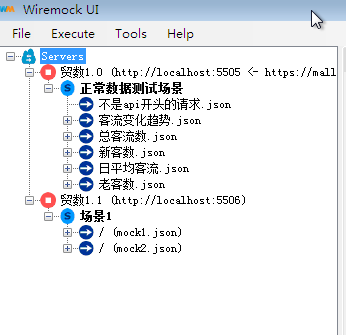

Running as a Standalone Process
java -jar wiremock-standalone-2.14.0.jar
–port: Set the HTTP port number e.g. –port 9999
–bind-address: The IP address the WireMock server should serve from. Binds to all local network adapters if unspecified.
–root-dir: Sets the root directory, under which mappings and __files reside. This defaults to the current directory.
–record-mappings: Record incoming requests as stub mappings. See record-playback.
–proxy-all: Proxy all requests through to another base URL e.g. –proxy-all=”http://api.someservice.com“ Typically used in conjunction with –record-mappings such that a session on another service can be recorded.
需求背景
目的是测试前端图表在不同数据值的情况下显示是否正常，不依赖后端的数据。
WireMockUI
安装环境
安装
基本使用
贸数测试例子
目录结构
测试数据需要按照一定的目录结构来归档，我们用的目录结构如下：
1 |
|
这样的目录结构可以方便后续回归测试，比如测试某个版本在某种场景下的图表展示情况，直接找到对应的mock数据测试即可。
上面的目录结构，对应到 WireMockUI 上，就是下面这样的结构：
1 |
|

录制
前端的图表数据是通过http请求拿到的，我们测试的